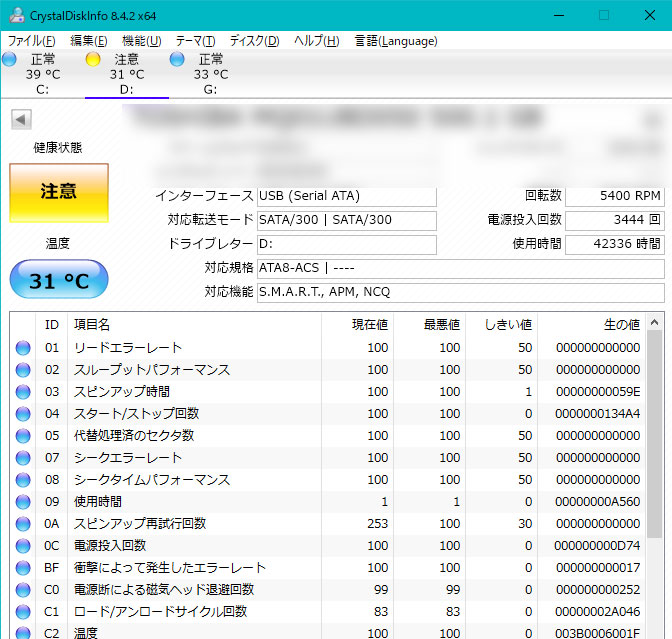

HDD、SDDなど記録媒体
HDD
手ごろな価格だがスピードが遅い。
3~5年くらいで寿命。
高温やホコリに弱い。
セクタ
不良セクタ
CrystalDiskInfo

HDD,SDDの状態をディスクの損傷などで判断できる。
CrystalDiskInfoダウンロードページ
インストール
- 通常版をクリック
- 使用許諾にチェック
- インストール先
- アイコンの作成
使用方法
健康状態
「健康」 「注意」 「異常」の表示で確認できます
S.M.A.R.T
01リードエラーレート データ読み込み時のエラー数値。「現在値」や「最悪値」が、「しきい値」以下だと異常。
05代替処理済セクタ数
C5代替処理保留中のセクタ数セレクタ数が増加している場合、HDDが寿命の可能性
C6回復不可能セクタ数
SDD
特徴
- HDDより起動等かなり速い
- やや高価。
- 寿命が長め
- 耐久性がある。
- データ復旧作業が難しい
USB
規格
| 規格名 |
特徴 |
速度 |
| 3.1 |
|
|
| 3.0 |
PCの入力端子内が青い
| 5Gbps（5,000Mbps） |
| 2.0 |
PCの入力端子内が黒い |
480Mbps |
USB Type-C
3.0PCの入力端子が青い 5Gbps
2.0PCの入力端子が黒い 480Mbps
FAT32ほとんどのUSBメモリーの形式
NTFS
exFAT
フォーマット
現在あるデータは使用できなくなる
巡回冗長検査CRCエラー
HDDやUSBメモリの劣化など物理障害が原因で起こる。
データへのアクセスができない。
エラーメッセージが出ている場合データは復旧できる可能性がある。
データコピー
フリーソフトを使用。